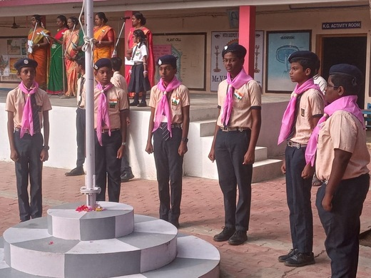

In the field of extracurricular activities, the platform has been expanded to explore the student
potentials. Programmes such as Bharatham, Yoga, Taekwondo, Music, Abacus and Silambam are taught to the
students by professionals every week to enhance their fitness and defense skills.
“EDUCATION IS THE CROWN OF LIFE.”
Education helps the children to shape their life and mould their future. Therefore we give importance to
the children through education. We give first preference to discipline next to the education. We
organized seminar in order to develop the children in their character and behavior. At the same juncture
we give importance to the extracurricular activities like Bharathanatyam, Karate, Yoga and music.’’
Health is Wealth.’ Along the other subjects we give importance to the physical education. So the
children are well motivated with delightfully to have the bright future through the various activities.

Other Activities
“The purpose of education is to replace an empty mind with an opened eye and to support children in
developing the skills, the knowledge, and the dispositions that will allow them to be
responsible, contributing members of their community to be a good friend, to be a good mate, to
be able to work, and to contribute to the well-being of the community. It is create emotionally
healthy meaningful relationships among the students.
In Kinder Garden classes’ activity based learning is given.
Faith formation and moral classes are conducted for the students by our sisters.
To reach our education to every student, we take special care and conduct coaching classes for the
slow learners and for the students appearing Board Exam every day.
To encourage creative thinking among children and to find their hidden talents we conduct “No bag
day” on every Saturday. It was conducted in our school very creatively.
In Kinder Garden classes’ activity based learning is given.
No bag day was conducted in our school very creatively.